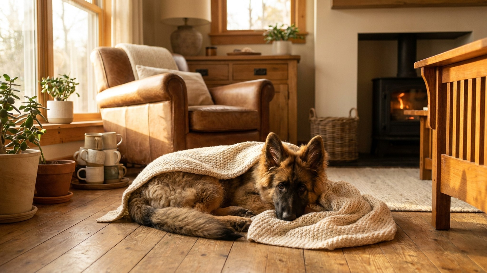

Немецкая овчарка в три месяца выглядит крепкой и неугомонной — и именно поэтому так легко перегрузить её суставы, не заметив этого сразу. До 12–14 месяцев зоны роста костей у крупных пород открыты, и неправильная нагрузка в этот период аукается годами. Пять конкретных вещей, которые стоит держать в голове с первого дня.
🐾 Экономьте на лишних визитах к врачу
Сначала спросите AI-ветеринара в AnimaLife — часто этого достаточно, чтобы понять, нужен ли визит к врачу.
У крупных пород — а немецкая овчарка относится к ним — скелет формируется медленнее, чем у мелких. Зоны роста (хрящевые пластины на концах костей) остаются мягкими примерно до 12–14 месяцев. В этот период они хуже переносят удары, повторяющиеся прыжки и скручивания. Избыточная нагрузка на растущие суставы — один из факторов, повышающих риск проблем с тазобедренными и локтевыми суставами у овчарок в зрелом возрасте. Именно поэтому профилактика начинается не у ветеринара, а дома — с ежедневных решений хозяина.
Щенок немецкой овчарки активен по природе, и полное ограничение движения — не цель. Цель — правильная нагрузка:
Щенок немецкой овчарки с избыточным весом нагружает суставы сильнее. Перекармливание — особенно пищей с избытком кальция и фосфора — нарушает темп роста костей. Кормите щенком-кормом для крупных пород (Large Breed Puppy): в нём специально скорректированы эти пропорции. Контролируйте вес раз в две-три недели — рёбра должны прощупываться, но не выпирать. Если щенок набирает слишком быстро — обсудите рацион с ветеринаром.
Если замечаете, что щенок прихрамывает после прогулки, неохотно встаёт после сна или избегает нагрузки — это повод показать врачу, не откладывая.
🐾 Всё о вашем питомце — в одном приложении
AI-ветеринар, дневник, напоминания о прививках и уходе. Установите AnimaLife — это бесплатно, в Telegram и MAX.
🐾 Понравился разбор?
Подпишитесь на канал — каждый день разбираем по одному тревожному симптому у кошек и собак: что в пределах нормы, а когда пора к врачу. Подпишитесь, чтобы не пропустить разбор, который может спасти здоровье вашего питомца.